순위 기준과 5위 — AI 할아버지 가족 채널
진행자는 매출이 큰 순서로 줄 세우지 않아요. 슬라이드의 첫 줄 '한국에서 · 혼자 · 가진 것으로'가 시작하기 쉬운지를 묻고, 둘째 줄 '× 돈 × 오래 가나'를 곱해요. 아래 작은 글씨는 '순위는 제 판단입니다'예요.
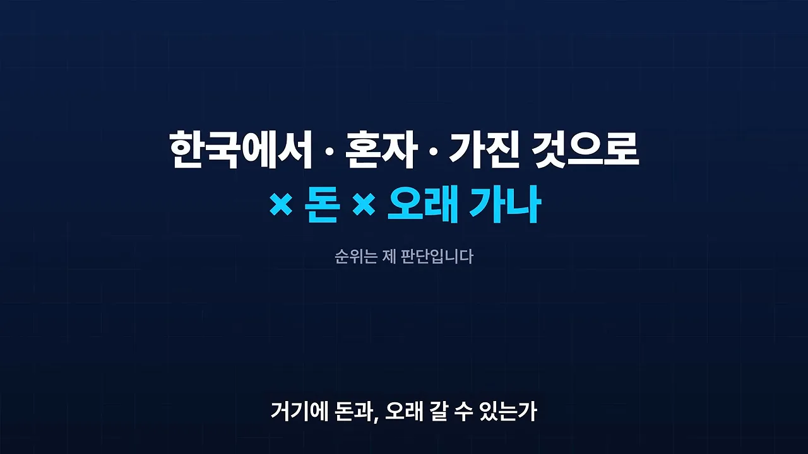
다섯 사례를 먼저 한 표로 보면 이래요. 판정 칸의 ×, △, ○는 영상 슬라이드에 나온 표시 그대로예요.
| 순위 | 사람 | 무엇을 했나 | 영상 속 숫자 | 판정 | 순위를 가른 것 |
|---|---|---|---|---|---|
| 5위 | 랑가 | AI 아미시 할아버지 채널 + 전자책 | 한 달 매출 27만 3천 달러 | × | 돈은 1등, 오래 가기 어려움 |
| 4위 | 클레어 보 | AI 직원 9명을 둔 1인 회사 | 첫 가격 1년 12달러 | △ | 임원 경력 30년 차라 출발선이 다름 |
| 3위 | 캘러웨이 | 사업가만 보는 인스타 계정 | 82일 매출 10만 달러 | △ | 팔로워 40만 계정에서 출발 |
| 2위 | 앨리샤 리틀 | 이력서로 돈벌이 찾는 방법 | 매출 없음(방법) | ○ | 오늘 0원으로 시작 가능 |
| 1위 | 샌디 리 | 한 칸 옆 분야 대행 | 월 3,000 → 5,500달러 | ○ | 월 20달러·하루 1~2시간 |
5위 — AI 할아버지 가족 채널
랑가는 드롭쉬핑과 아마존 판매로 수십만 달러를 잃은 뒤 유튜브에서 다시 시작했어요. AI로 아미시 할아버지 캐릭터를 하나 만들었고, 채널이 뜨자 아내 같은 가족 캐릭터를 늘렸어요. 아래 채널 화면에서 밀짚모자를 쓴 할아버지가 그 캐릭터예요. 'Popular' 탭에 수박 고르는 법, 토마토 가지치기 같은 생활 영상이 보여요.
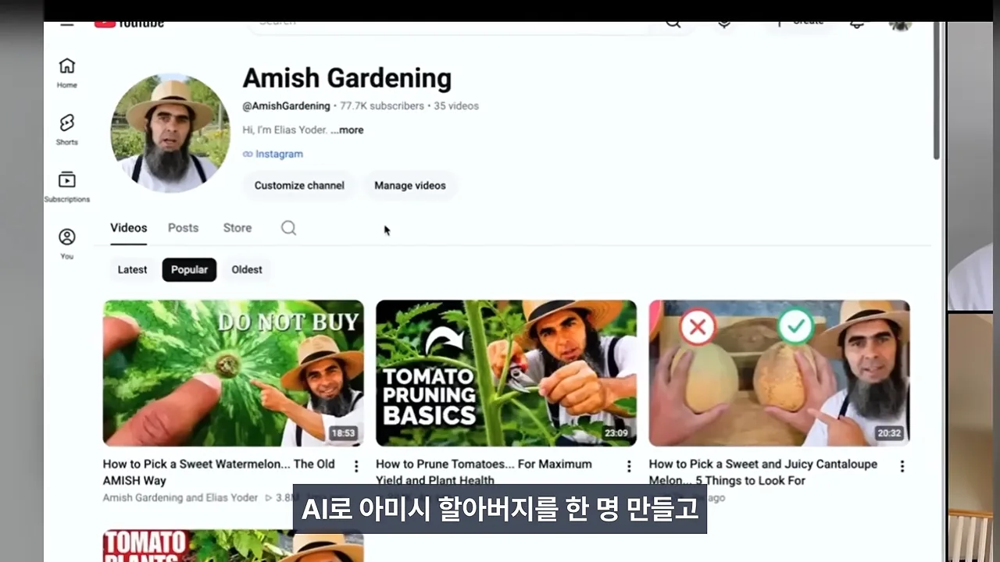
배울 점은 주제를 고른 방식이에요. 유튜브에서 'Amish'를 검색하고 인기순으로 정렬했더니, 맨 위 DW(Deutsche Welle) 다큐멘터리가 2년 전 영상인데 870만 회였어요. 찾는 사람이 이미 많다는 걸 확인하고 들어간 거예요. 파는 상품은 절약 생활 전자책 하나예요.
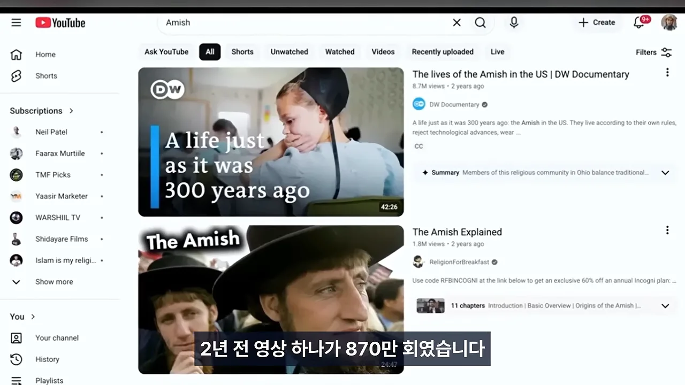
그래도 꼴찌인 이유는 셋이에요.
- AI로 만든 할아버지를 진짜 사람처럼 보이게 했어요. 이 방법을 가르친 코치는 시청자가 AI인지 신경 쓰지 않는다고 말해요. 진행자는 시청자는 몰라도 유튜브는 신경 쓴다고 짚어요. 진짜처럼 보이는 AI 인물이면 업로드할 때 AI 사용을 밝히게 돼 있거든요.
- 남의 영상 제목과 포장을 거의 그대로 가져왔어요. 진행자는 실제 아미시 크리에이터의 것이라고 말해요.
- 판매 페이지의 별점 다섯 개가 만들어진 숫자예요.
둘째 이유는 아래 화면에서 보여요. 위는 AI 할아버지 Elias Yoder의 영상이고, 아래는 해충 방제 채널 Arrow Pest Service의 영상이에요. 두 썸네일 모두 'No More Mosquitoes' 문구, 빨간 통, 통을 가리키는 화살표를 써요. 제목도 'KILL EVERY Mosquito … SAFE For Honey Bees & Pets!'로 같고, 위쪽에만 'The AMISH Way'가 붙었어요. 위 영상 설명란은 'My name is Elias Yoda. I am Amish'로 시작해요. AI 인물이 스스로 아미시라고 소개하는 거예요.
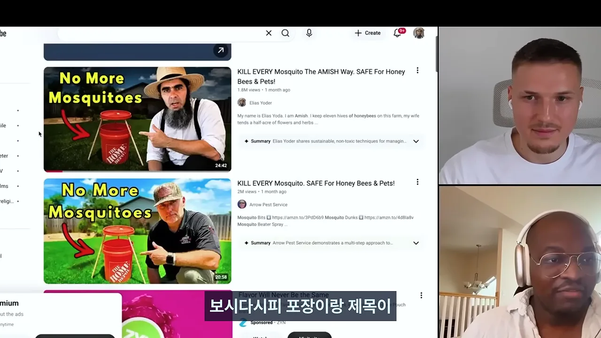
셋째 이유는 전자책 판매 페이지 오른쪽 'Ratings' 칸이에요. 87개 평가가 모두 별 다섯 개, 100%로 찍혀 있어요. 원래 인터뷰에서 랑가는 이 숫자가 정확하지 않다고 직접 말해요. 판매 플랫폼에서 낮은 별점을 준 사람에게 환불해 주면 그 별점이 사라져서, 불만족한 사람에게는 바로 환불해 준다는 거예요.
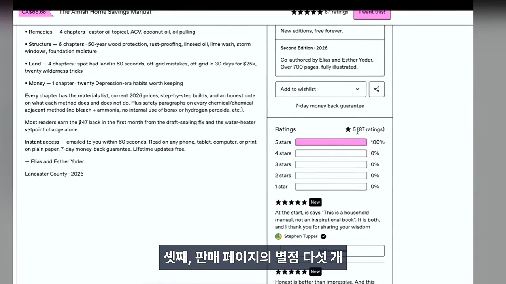
5위에서 가져갈 건 하나예요. 슬라이드의 두 줄 그대로, 내 주제를 검색해 인기순으로 정렬해서 수요부터 확인하고, AI 캐릭터를 쓴다면 처음부터 AI라고 밝혀요.
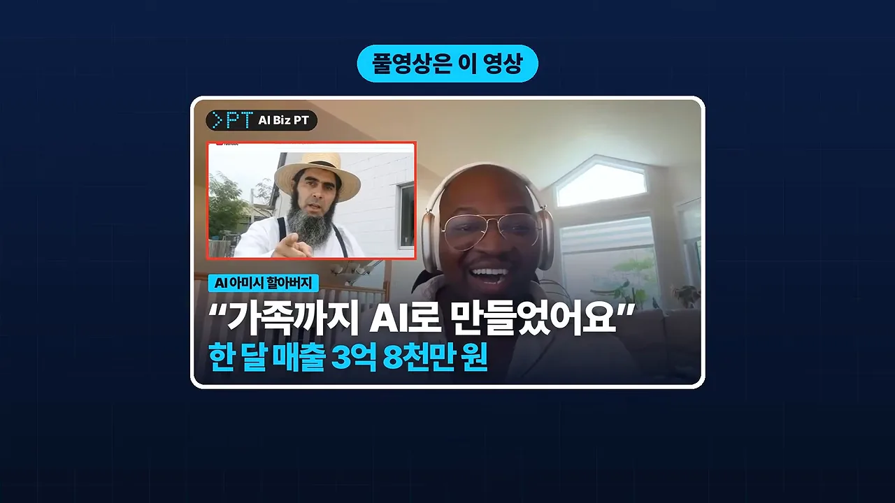
4위 — AI 직원 9명, 사람은 나 하나
4위는 ChatPRD를 만든 클레어 보예요. 마케팅·비서·영업·고객 지원까지 AI 직원이 아홉이고, 정직원은 본인 한 명이에요. 외부 투자는 한 푼도 받지 않았고 흑자라고 해요. 아래 장면의 'Constellation of 9 OpenClaws'가 그 아홉 AI 직원을 가리키는 말이에요.
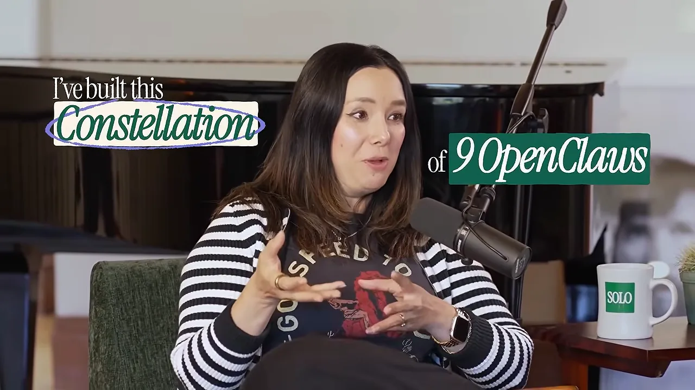
다 만들기 전에 1달러부터
진행자가 이번 주 가장 따라 할 만한 한 수로 꼽은 건 다 만들기 전에 1달러라도 받아 보는 거예요. 클레어 보는 원래 공짜로 풀던 프롬프트 앞에 결제창 하나를 끼웠어요. 첫 가격은 1년에 12달러, 약 1만 7천 원이었어요. 지금 매출이 얼마인지는 끝까지 밝히지 않았어요.
Will somebody put in a credit card and give me a dollar?
누가 카드를 꺼내서 나한테 1달러를 줄까?
— 원래 인터뷰 03:50
그는 회사를 새로 시작할 때마다 이 질문부터 던진다고 해요. 처음 목표는 한 달에 와인 한 잔 값이었고, 그게 한 병 값이 되고 한 상자 값이 됐다고 말해요.
그런데 왜 4위일까요
진짜 이유는 이력이에요. 큰 회사에서 제품과 기술을 총괄하는 임원을 세 번 지냈고, 코딩은 30년째예요. 앞서 차린 회사를 판 경험도 있어요. 슬라이드도 '1달러 먼저 받기만 따라 하기'라고 따라 할 범위를 좁혀요.
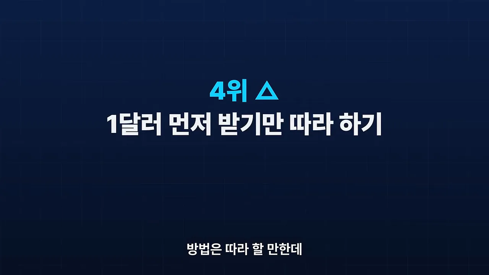
한국에서 해 본다면 슬라이드의 두 줄이에요. 다 만들기 전에 결제 링크부터 걸어서 1,000원이라도 누가 카드를 꺼내는지 봐요. AI 직원은 내가 제일 하기 싫은 일 하나부터 맡겨요.
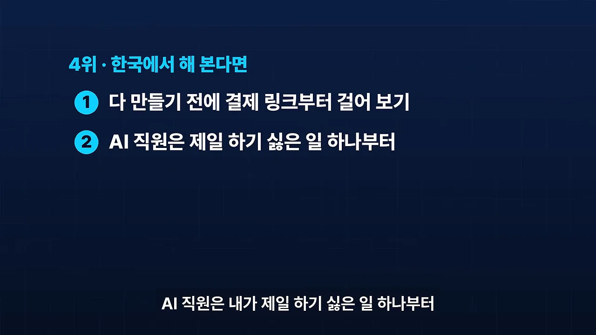
3위 — 일부러 안 터뜨린 인스타 계정
3위는 캘러웨이예요. 아래 화면 위쪽이 원래 계정(kallaway, 팔로워 44만 4천), 아래쪽이 새로 연 계정(kallawaymarketing, 6만 8천 5백)이에요. 새 계정은 사업가만 보도록 만들었고, 82일 만에 매출 약 1억 4천만 원(10만 달러)을 내고 이메일 2만 개를 모았어요. 매출은 이 계정에서 나왔다고 본인이 집계한 숫자예요.
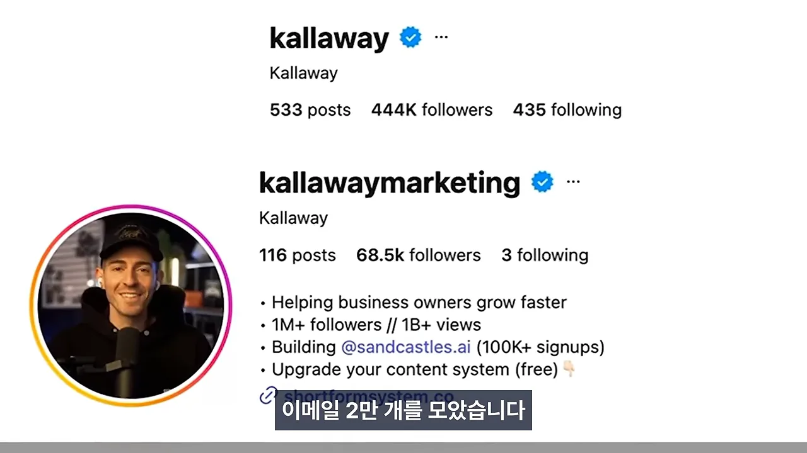
터지면 오히려 손해
특이한 건 일부러 영상을 크게 터뜨리지 않았다는 점이에요. 크게 터진 영상을 본 사람 중 타깃 고객은 많아야 10~20%이고 80%는 아니라는 거예요. 그 80%가 팔로우하면 다음 영상도 그 사람들에게 가요. 아래 화면은 그 새 계정의 피드예요. 위쪽 동그란 하이라이트가 전략, 프레임워크, 스토리텔링 같은 사업 주제로만 채워져 있어요.
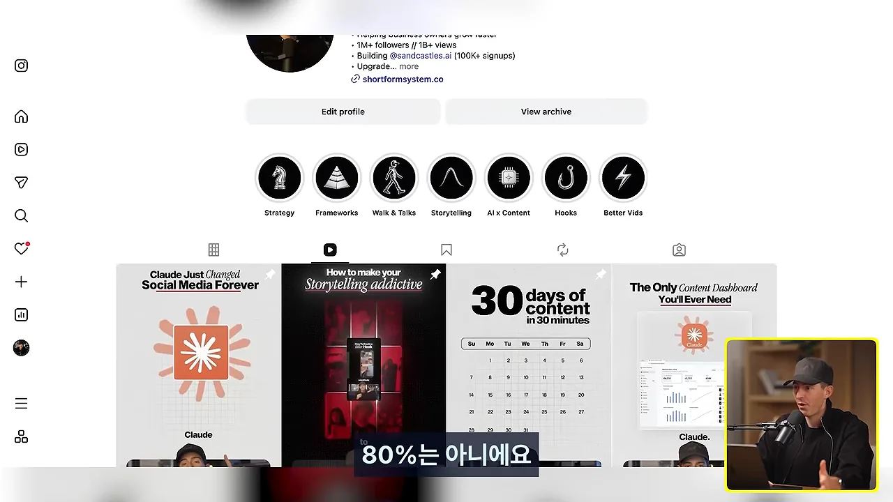
이번 주 최고의 교훈은 막혔던 자리
진행자가 이번 주 최고의 교훈으로 꼽은 건 이 계정을 열기 전에 그가 막혔던 자리예요. 사람은 모았는데 팔 것이 없었어요. 그래서 그는 늘 상품부터 시작하라고 해요.
I recommend you always start with the offer.
항상 팔 것부터 시작하라고 권해요.
— 원래 인터뷰 28:31
진행자는 이게 자기 채널 이야기이기도 하다고 털어놔요. 구독자는 모였는데 팔 것이 아직 없다는 거예요. 그래도 3위인 건 출발선 때문이에요. 새 계정을 열 때 이미 팔로워 40만이 넘는 계정이 있었고, 그 증거를 프로필에 걸고 시작했어요. 슬라이드 아래 작은 글씨 '단, 팔로워 40만 넘는 계정에서 출발'이 그 얘기예요.
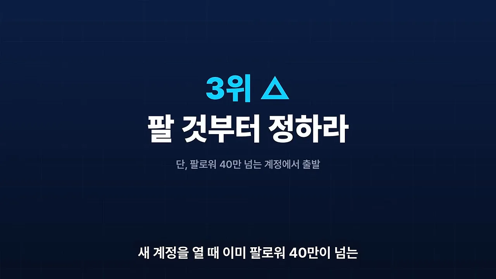
한국에서 해 본다면
먼저 영상보다 팔 것을 정해요. 거창할 필요 없이 내 시간 1시간짜리 상담도 상품이에요. 그다음 일주일 일곱 편을 넓게 2편, 좁게 4편, 실험 1편으로 나눠요.
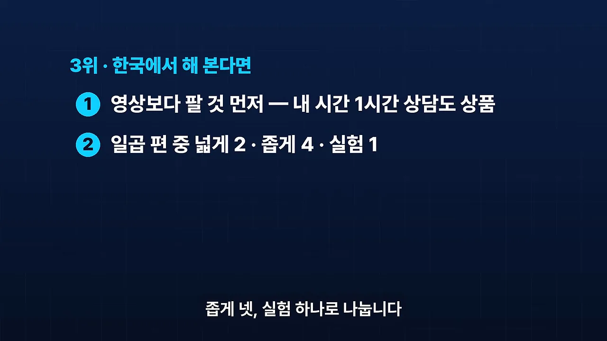
일곱 편 배분을 그림으로 그리면 이래요. 넓게 가는 두 편은 새 사람을 조금씩 데려오고, 좁게 가는 네 편은 실제로 살 사람에게만 꽂혀요. 남은 한 편은 무엇이든 시험해 봐요.
2위 — 이력서로 돈벌이 찾는 5단계
2위는 매출이 아예 안 나오는 사례예요. 대신 오늘 바로 해 볼 수 있어요. 앨리샤 리틀은 'AI 여왕'으로 불리고, 기업과 정부에 AI를 가르치는 강사들을 길러 내요. 시작은 바닥이었어요. 2010년 이혼하면서 한 해 매출 600만 달러(약 84억 원)짜리 사업에서 빈손으로 나왔고, 언니 집 소파에서 다시 시작했어요.
Everybody has something people will be willing to pay them for.
누구에게나 남이 돈을 낼 만한 게 있어요.
— 원래 인터뷰 (이 영상 05:33 부근)
이력서를 사업 고문처럼 읽히는 5단계
그가 공개한 건 사업이라기보다 방법이에요. 영상이 보여 준 순서대로 정리하면 다섯 단계예요.
- 클로드 설정에서 '모델 개선에 도움' 항목을 확인해 꺼요 — 이력서 같은 개인 정보를 넣기 전에 해 둬요.
- 내 이력서를 넣어요
- 채용 담당자가 아니라 사업 고문처럼 읽어 달라고 시켜요 내가 실제로 잘하는 것, 묻혀 있던 줄, 월급 밖에서 돈 받을 수 있는 기술이 정리돼 나와요
- 묻혀 있던 줄을 찾아요 — 취미 칸에 적혀 있던 모금 위원장 경력 같은 것이에요.
- 나에게 맞는 돈벌이 세 개를 뽑고, 긴 계획 대신 첫날 해 볼 시험을 잡아요
아래가 3단계에서 쓰는 프롬프트예요. 첫 문장이 핵심이에요. 'This is my resume. I want you to read it the way a business advisor would, not the way a hiring manager would.' 이력서를 채용 담당자가 아니라 사업 고문의 눈으로 읽어 달라는 뜻이에요. 그 아래 'Tell me:' 목록에서 잘하는 것, 낮게 평가했거나 묻어 둔 것, 사람들이 따로 돈을 낼 기술을 물어요.
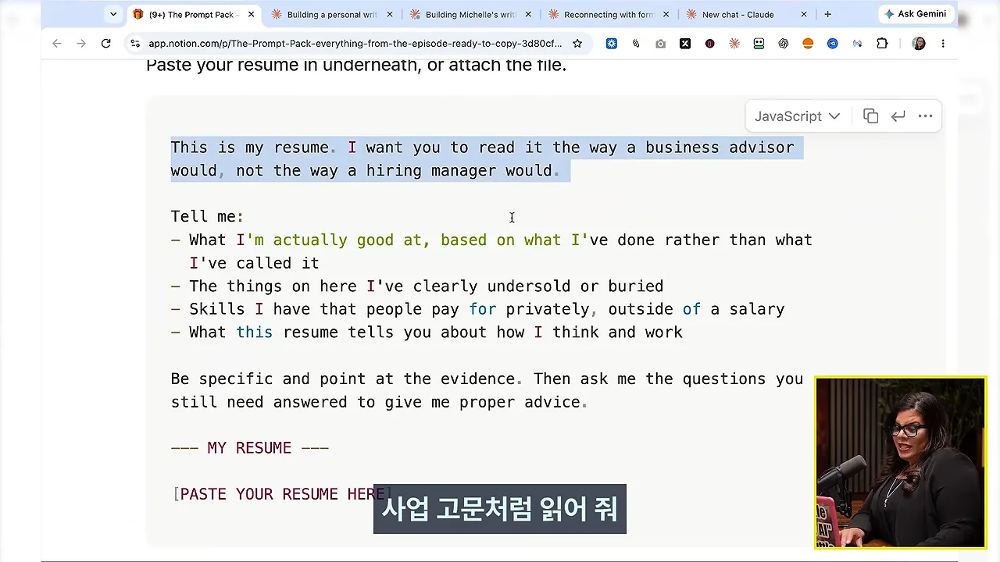
4단계는 결과 화면에서 보여요. 'What you've undersold or buried' 제목 아래 넷째 줄이 'You chair a fundraising committee, and it's filed under Interests'예요. 모금 위원회 위원장 경력이 취미 칸에 들어가 있었다는 지적이에요. 그 뒤에는 이게 자원봉사자 관리와 모금 경험이니 경력 칸에 들어가야 한다는 설명이 이어져요.
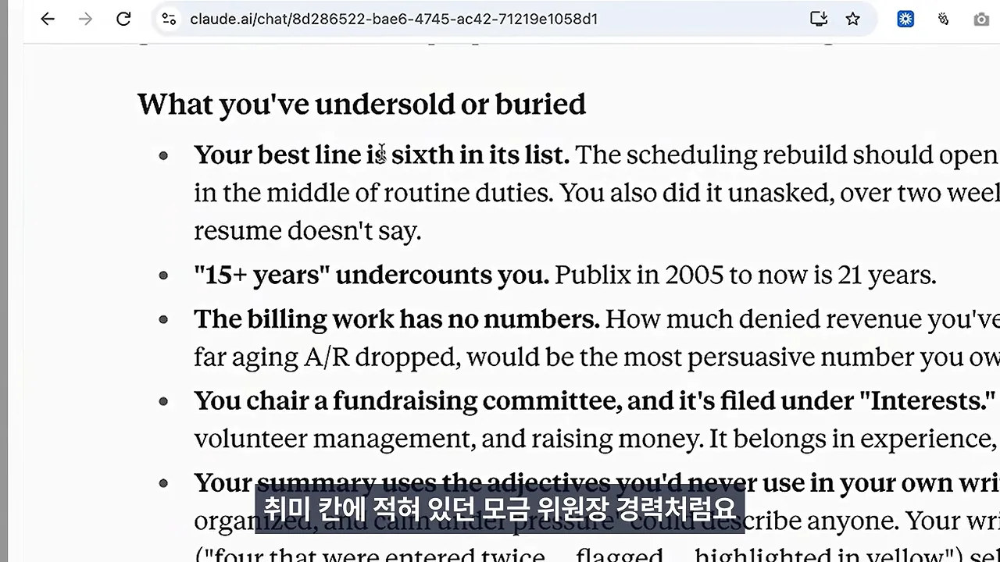
매출이 없는데 왜 2위일까요
방법이라서 얼마를 벌지는 사람마다 달라요. 84억 원도 AI 이전에 그가 잃은 사업의 숫자예요. 슬라이드 작은 글씨도 '사업이라기보다 방법 · 지금 사업 매출은 영상에 없음'이라고 못 박아요. 그래도 2위인 이유는 하나, 오늘 돈 한 푼 없이 바로 해 볼 수 있어서예요.
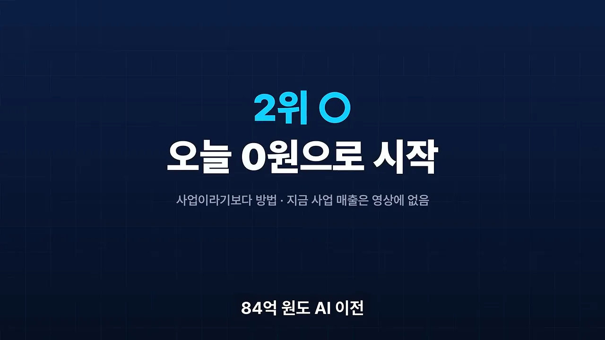
한국에서도 그대로 돼요. 슬라이드의 세 줄처럼 이력서를 클로드에 넣고 사업 고문처럼 읽혀요. 묻혀 있던 줄로 돈 받을 일 3개를 뽑고, 90일 계획 대신 오늘 연락할 사람 한 명을 정해요.
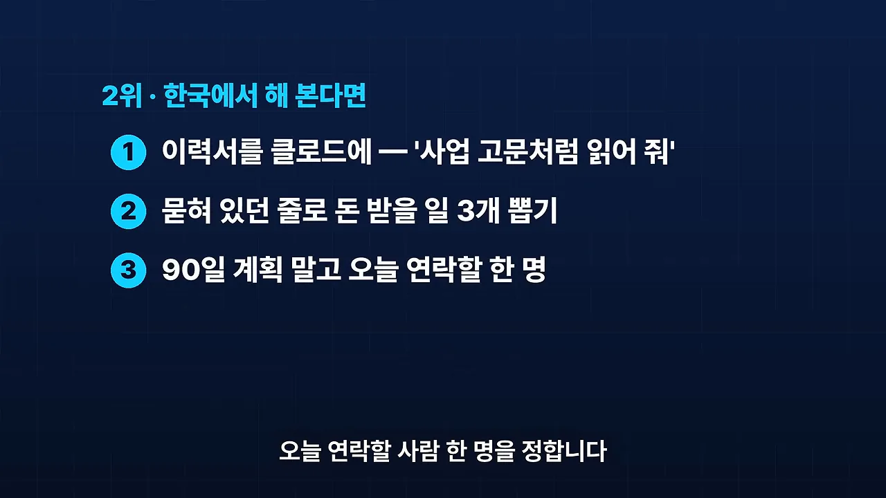
1위 — 월 20달러 챗GPT로 딴 첫 계약과 첫 주 계획
1위 샌디 리는 회사를 다니며 여덟 살도 안 된 아이 셋을 키워요. 하루 한두 시간밖에 못 써요. AI도 SEO(Search Engine Optimization)도 몰랐고, 가진 건 한 달 20달러짜리 챗GPT와 영업 경험이었어요.
한 칸 옆 분야에, 먼저 제안하기
그는 프리랜서 마켓 업워크에서 다들 몰리는 'AI 자동화' 대신 한 칸 옆인 SEO 일에 지원했어요. 후기 하나 없이 일곱 번째 지원서로 첫 일을 땄어요. 비결은 제품을 만들기 전에 먼저 제안한 거예요. 지원할 때 어떻게 도울 수 있는지 설명하는 영상을 찍어 보냈어요.
Record a video … explaining how you can help them.
어떻게 도울 수 있는지 설명하는 영상을 찍으세요.
— 원래 인터뷰 (이 영상 07:12 부근)
2~3분짜리 영상 하나로 딴 첫 계약은 월 3,000달러(약 420만 원) 고정 계약이었어요. 결과가 나오자 같은 일을 늘려 값을 올렸어요. 언어만 바꿔 같은 일을 한 번 더 하면서 월 5,500달러(약 770만 원)가 됐어요.
맨손은 아니었어요
진행자는 영업 경력이 있었고 예전 채널 팔로워가 55만 명이었다는 점도 짚어요. 아래는 영상에 잠깐 나온 샌디 리의 월별 매출표예요. 'Client/Retainer' 칸이 이 섹션에서 말한 대행 고정 계약이에요. 2026년 3월부터 5,500달러로 올라요.
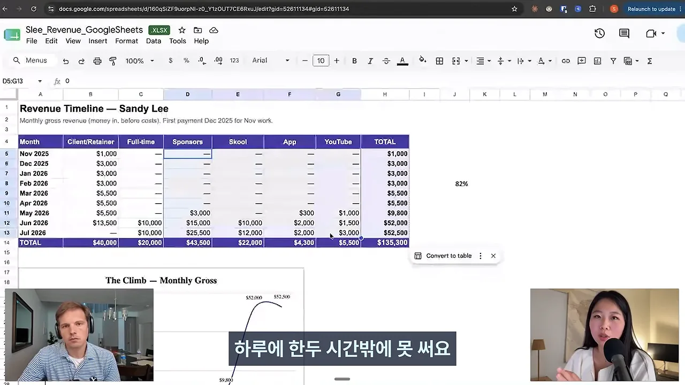
표의 'TOTAL' 칸만 막대로 그리면 이래요. 2026년 4월까지는 대행 계약 하나뿐이에요. 5월부터 Sponsors, Skool, App, YouTube 칸이 채워지면서 6월에 5만 2천 달러로 뛰어요.
한국이라면 크몽·숨고에서
'한국에서, 혼자, 지금 가진 것으로'라는 세 조건에 가장 잘 맞아서 1등이에요. 슬라이드 아래 작은 글씨 '단, 영업 경력 · 옛 팔로워 55만은 있었음'도 함께 봐 두세요.
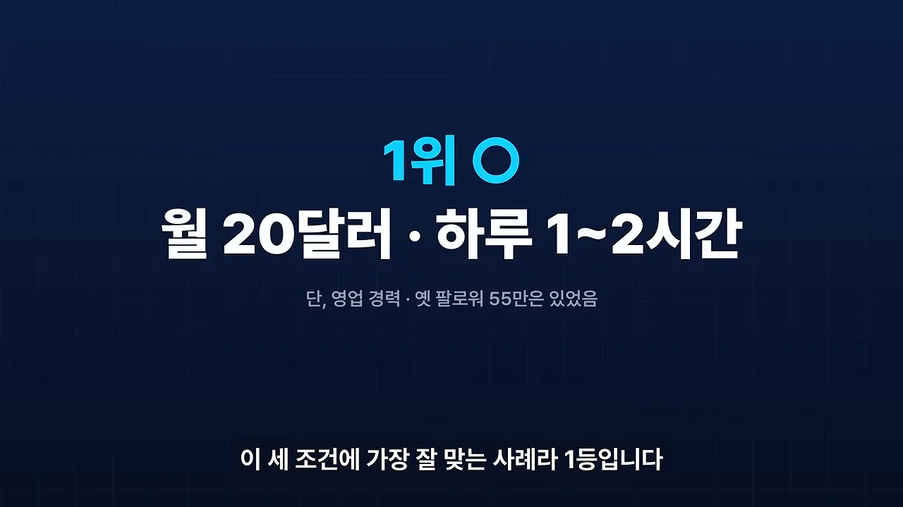
한국이라면 크몽이나 숨고가 업워크 자리예요. 슬라이드의 세 단계는 이래요. 한 칸 옆 분야로 대행 상품을 하나 올리고, 문의가 오면 2~3분 화면 녹화로 먼저 제안하고, 결과가 나오면 같은 일을 늘려 값을 올려요.
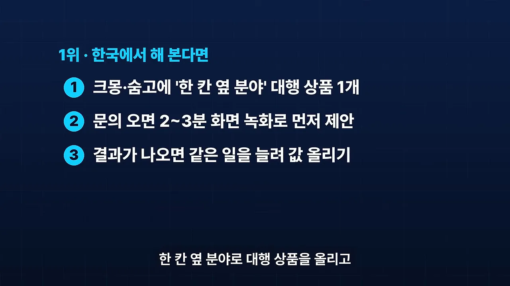
내가 한다면, 첫 주에 할 일
마지막으로 진행자는 이번 주에 시작한다면 무엇을 할지 요일별로 보여 줘요. 월요일엔 이력서를 클로드에 넣고 돈 받을 일 3개를 뽑아요. 수요일엔 그중 하나로 크몽이나 숨고에 상품을 하나 올려요. 금요일엔 아는 사람 세 명에게 2분짜리 제안 영상을 보내요.
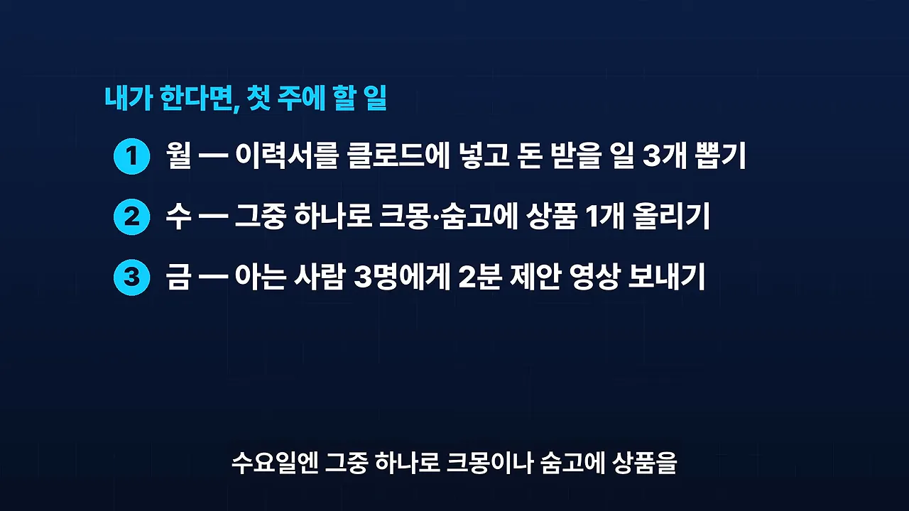